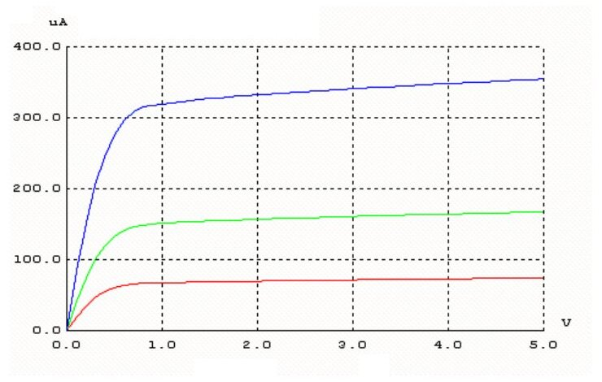

· EEM312
EEM312 Digital Electronics: NMOS and PMOS Characteristics Lab Reports (2005–2014)
EEM312 – Sayısal Elektronik · 28.04.2005 · 16.10.2026
This post compares four students' reports for the experiment on the characteristics of NMOS and PMOS devices in the Başkent University EEM312 Digital Electronics software laboratory. The experiment was run as Y4 in 2005, as Y3 in the 2011 handouts, and as "Experiment 7" in 2014; the content is the same. The reports are: a report dated 28 April 2005 (A), a preliminary work and report from 2011 (B), a report from spring 2014 (C), and a preliminary work and report from 2014 (D). All are the work of friends; personal information has been removed. The handout and model parameters are in the post EEM312 software laboratory handouts Y1–Y3. The reports with personal information redacted and the cleaned SPICE netlists are in the ZIP at the end of the post.
Preliminary work: concepts (B and D)
- Saturation current: As V_DS is increased, I_D first increases; at the point V_DS = V_GS − V_T the channel pinches off (pinch-off), and beyond this the current is ideally independent of V_DS: I_D = (k'/2)(W/L)(V_GS − V_T)².
- Channel length modulation: When V_DS is increased beyond the saturation boundary, the effective channel length shortens and the current continues to increase slightly: I_D = I_D'(1 + λV_DS). It is more pronounced in short-channel transistors.
- Velocity saturation: When the electric field reaches a critical value, the carrier velocity saturates (due to collisions). In short-channel transistors, velocity saturation can be reached before V_DS reaches V_GS − V_T.
- Hot carrier effect: Because supply voltages have not been scaled down at the same rate as dimensions shrink, the field grows; accelerated electrons become trapped in the gate oxide, V_T increases over time in NMOS (decreases in PMOS), and the lifetime of the device is shortened.
- Electromigration: At high current density, the electron flow drags metal atoms along; at contacts, diffusion of aluminum into silicon can short-circuit junctions, and thin lines can break.
- CMOS latch-up: The n-p-n-p layers form a thyristor-like structure made of two bipolar transistors that drive each other through positive feedback; when triggered, the supply is short-circuited. Countermeasure: reducing the parasitic resistances with guard rings and plenty of body/well contacts close to the sources.
Note: In B's preliminary work, the saturation velocity of electrons and holes is written as "approximately 10⁻⁵ m/s"; the correct value is approximately 10⁵ m/s (10⁷ cm/s).
Question 1: Characteristic curves with the Level 3 model
All reports plotted the same six curves for a W = 1.8 µm, L = 1.2 µm transistor using the Level 3 model. The current is read through a 0 V "measurement source" (Vsamp) connected in series with the drain; the W sweep is done with the alter command (from report D):
M1 2 1 4 3 NMOS W=1.8u L=1.2u NRS=0.333 NRD=0.333
VIN 1 0
VDD 2 0 5
VBS 3 0 0
Vsamp 4 0 0
.control
Alter M1 W=1.8u
dc Vdd 0 5 0.1
let c1=vsamp#branch
Alter M1 W=3.6u
dc Vdd 0 5 0.1
let c2=vsamp#branch
Alter M1 W=7.2u
dc Vdd 0 5 0.1
let c3=vsamp#branch
plot c1 vs v(2) c2 vs v(2) c3 vs v(2)
.endc| Curve | Observed effect (common interpretation of the reports) |
|---|---|
| NMOS I_D–V_DS, V_BS = 0, V_GS = 0–5 V | In saturation the current does not stay constant but rises with a slope: channel length modulation |
| NMOS I_D–V_GS, V_SB = 0–5 V, V_DS = 5 V | As V_SB increases the curves shift to the right, V_T increases: body effect |
| NMOS I_D–V_DS, V_GS = 2 V, W = 1.8/3.6/7.2 µm | As W increases the current increases (proportional to W/L) |
| PMOS I_D–V_DS, V_SG = 0–5 V | Current and voltage are negative; again channel length modulation |
| PMOS I_D–V_GS, V_SB = 0–5 V | Body effect (V_T increases in absolute value, the curves shift) |
| PMOS I_D–V_DS, V_SG = 2 V, W sweep | As W increases the absolute value of the current increases |

The threshold voltage relation given in the reports for the body effect is: V_T = V_T0 + γ(√(|2φ_F| + V_SB) − √|2φ_F|). Report A adds that when W is doubled the current also roughly doubles, but the capacitances grow as well.
Note: Report B states that as W/L increases "the resistance increases and, from V = I·R, the current increases"; the correct statement is that as W/L increases the channel resistance decreases and the current increases. The statement in the PMOS part of the same report, "as W increases W/L decreases, the current decreases," is also wrong; in PMOS too, |I_D| increases as W increases (the report's own graphs show this).
Question 2: Long and short channel, velocity saturation
Two NMOS transistors were compared using BSIM models: L = 1 µm, W = 90 µm (BSIM3, long channel) and L = 0.18 µm, W = 5 µm (BSIM4, short channel); V_GS = 0.2–2 V, V_DS = 0–2 V.
The common conclusion of the reports: in the short-channel transistor, since the electric field along the channel is much stronger at the same V_DS, the carriers enter velocity saturation early; the current saturates before V_GS − V_T is reached, the saturation current increases approximately linearly rather than quadratically with V_GS, and the I_D–V_DS curves look "softer" than those of the long channel. The reason for choosing different W values is to keep the currents of the two transistors at comparable levels so that only the effect of channel length is seen.
Note: Report A explains the early saturation in the short channel together with channel length modulation; the early and low saturation in the curves is mainly due to velocity saturation, while the slope in the saturation region is due to channel length modulation.
The folder also contained copies of the netlists for the same experiment belonging to several other students (differing only in the comment lines); the ZIP includes the netlists of report B (A_soru…) and report D (C_nmos…, C_pmos…), with the comment lines containing names and numbers removed.